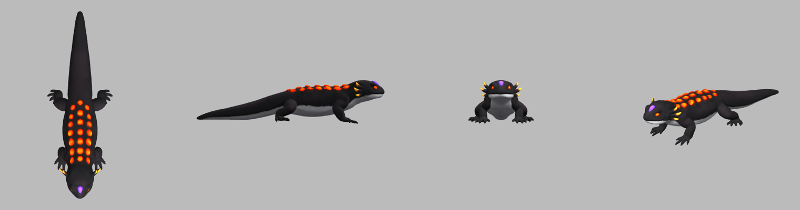

Your export of the Kiln's warden: the great fire salamander, long and low, with sooty hide, live coals down its back, gold-tipped gill stalks and a violet brow scale. It now has a skeleton, an opening mouth and 12 moves made by hand. It prowls with an S through its body. For the Magma Dive it noses into the floor and swims under it to the ring, then bursts up and lies spent and dull. It coils its tail and whips it round for the Tail Lash, and rears with its throat white-hot to spit three gobbets of fire. The timings come from the game. Pick a move and drag to turn the view, then judge the weight and the hit. Nothing in the game has changed.
Idle or Prowl sets what it does between attacks, and Going turns it on the spot. An Action plays over that and repeats until you press it again. Hurt plays on top of anything. Death holds it down; press it again to spawn it back in. The bar names the part of the move that is playing. Anything under the floor is hidden, as in the game.

It came through in one piece with clean limbs: four splayed legs with five-toed feet clear of the body, a long tapering tail, three rows of glowing coals down its back, six gill stalks with gold tips behind the head, ember eyes, a violet brow scale and a pale chin and belly. Its head points straight down its length, so nothing was corrected. The mouth was closed, so I cut it open along the line of the lips, gave it a hinged jaw and painted the inside a dark red that heats up for the spit.
| Move | What it does | Timing |
|---|---|---|
| Idle | Low on its belly, it breathes and the coals breathe with it. The tail sweeps slowly, the gills flick, it tastes the air with a small jaw open and looks left and right. | 6 s loop |
| Prowl | A salamander's walk: diagonal legs step together while an S runs through its body and tail. Feet stay planted while they carry it. | Game: 1.5 u/s. |
| Turn left, turn right | It swings round on the spot, head first, the body bending after it. | Mine: 90 degrees a second. The game turns it to its target at once. |
| Magma Dive | The ring fills under the hero. It digs with its snout, noses into the floor and slides under, tail last. A dim glow runs under the floor to the ring, which cracks gold just before it bursts up through it on the beat with its mouth open. It slams down and lies spent: sprawled and dull grey, coals out. Then it gathers itself and the coals come back. | Game: Ember ring of radius 2.0 u on the hero for 76 ticks, under the floor for the last 46; 16 damage; a slag pool of radius 1.4 u that slows by 30 percent for 3 s; spent for 60 ticks (40 when enraged), taking 25 percent more damage. Here the hero stands 4 u away. |
| Tail Lash | While the cone fills it coils its tail round to its right, braced on its legs. On the beat it whips it across behind itself to its left, where the hero stands, and the hero is thrown. It settles and the tail swings back. | Game: when a hero is inside 2.8 u; Ember cone of radius 3.2 u and half-angle 65 degrees for 48 ticks; 12 damage and a 1.8 u throw over 8 ticks. The game aims the cone at the nearest hero and lashes first at a hero on its flank, so here the hero stands 2.2 u away at its left side. |
| Ember Spit | It rears up on its hind legs and the inside of its mouth heats white-gold. It spits three gobbets of fire on high arcs, each landing on its own ring and leaving a small pool of slag. It drops back onto its front feet. | Game: from half health; three Ember rings of radius 1.1 u, one on each hero it can see, landing at 60, 72 and 84 ticks; 9 damage each; pools of radius 0.9 u. Here the hero stands 5 u away and the other two rings stand in for heroes beside it. |
| Enrage | It rises on its front legs with its mouth wide in a roar and the coals flare. Then it slaps both front feet down. | Mine: 1.8 s. The game enrages it under 40 percent health but has no pose for it. |
| Hurt | The head and chest are knocked back. Plays on top of any move. | 0.42 s |
| Heavy hit | It is shoved back 0.25 u, its feet skidding with it, then plants its front feet again. | 1.1 s |
| Spawn | It grows out of the floor snout first, the way it bursts from a dive, comes down on its front feet and shakes the slag off its back. The coals wake. | Game: grow in 7 frames. The rise is mine. |
| Death | A jolt throws its head up. It thrashes, its legs give and it drops onto its belly, then slumps with its head on the floor and its tail curling in. The coals fade out. | 2.6 s, then it stays down |
A checker follows every point of the model through every frame of every move. It looks for five things. Sizes are in u; it is 2.4 u long.
| Checked | Found in the first build | Now |
|---|---|---|
| A joint that jumps in one frame (a pop) | A front elbow flipped in one frame as the dive slammed down, and the legs flipped in the enrage and the death, where a foot was asked to reach further than the leg is long. In the Tail Lash the shoulders jumped sideways at the strike. | None you would see. The feet now only reach where the leg can, a held-up foot stays inside the leg's length, and the body is balanced against the tail at the strike. One small hind-leg turn of 9 degrees is left in the heavy hit. |
| Any part under the floor | The tail sank through the floor as the body dipped. A hind foot dug its edge in, because it turned on its heel. The belly dipped through in the slam and the death. | The tail stays on the floor in every move and the feet sit flat. Two moments still dip 0.01 u: one hind foot at a step of the prowl, and the chest as the enrage slaps down. The dive and the spawn go under the floor on purpose, and the page hides that part. |
| One part pushed through another | The legs sprawl out from the body, so the upper arm and the hand meet the chest's skin as the leg folds. | The hands brush the chest by up to 0.04 u as the front legs fold under, and the hind toes come up under the thigh by 0.05 u as the knee bends. Both are hidden under the body from the game's camera. |
| Skin torn or pulled (a seam that opens) | None on the body. Cutting the mouth open stretched the lips when the jaw dropped. | The lips are cut along their own line, so the jaw opens clean. The biggest pull is 14 times on a few small triangles at the hips, under the floor in the dive and as it grows in at the spawn. Everything else stays under 9 times, which does not show. |
| Smoothness (a move that stops dead, a loop that jumps) | None. | None. Every move eases in and out, and the loops meet themselves. |
| What was measured, on every frame of every move | Result |
|---|---|
| Planted feet sliding | 4 mm at most, on one front foot in the prowl. 0 mm in every other move. |
| Feet reaching their marks | On their marks, except a front foot that falls 33 mm short while it swings in the enrage and 73 mm short while it flails loose in the death. |
| Loops that jump when they restart (idle, prowl, both turns) | 0 degrees. |
| Head facing straight | Straight on the model, so nothing was corrected. |
| Feet | Splayed out to the sides, the way a salamander stands. Its toes point forward on the front feet and out on the hind feet. |
These numbers come from the model file. I checked the poses as still frames only, because the cloud machine cannot play the page at full speed. The weight, the timing and the hit are yours to judge.